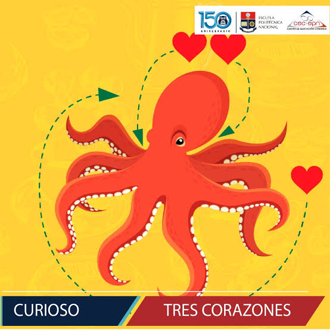

¿Sabias que?
Publicado el por Cristian

¿Sabías que los pulpos tienen tres corazones y sangre azul?
Y cuando nadan, ¡uno de sus corazones deja de latir temporalmente!
cursivapara dar enfasis a una palabra o frase. negrita para resaltar una palabra o frase. resaltado para resaltar una palabra o frase. pequeño para hacer que el texto sea más pequeño. tachado para mostrar que el texto ha sido eliminado. subrayado para mostrar que el texto ha sido agregado. subíndice para mostrar que el texto es un subíndice. superíndice para mostrar que el texto es un superíndice.
Bajo el mar
🌊 ¿Sabías que más del 80 % del océano sigue sin ser explorado por los seres humanos? ¡Hay criaturas viviendo en las profundidades que ni siquiera conocemos! 🐙🌌
Tiburones
🦈 ¿Sabías que los tiburones pueden vivir hasta 100 años? Son los depredadores más antiguos del planeta y han evolucionado durante millones de años.
- Los tiburones son los depredadores más antiguos del planeta.
- Pueden vivir hasta 100 años.
- Han evolucionado durante millones de años.
“El océano es el mayor misterio de nuestra planeta.”
- Cristian
Mas información sobre el océano y sus criaturas en nuestro próximo artículo. Universidad